18. Postgres-XL
Postgres-XL (or just XL, for short) is an open source project from 2ndQuadrant. It is a massively parallel database built on top of PostgreSQL, and it is designed to be horizontally scalable and flexible enough to handle various workloads.
In this chapter, we will use a cluster with 4 virtual machines: 1 GTM, 1 coordinator and 2 data nodes.
| Machine | IP | Role | |---|---|---|---| | xlgtm | 10.33.1.114 | GTM | | xlcoord | 10.33.1.115 | coordinator | | xldata1 | 10.33.1.116 | data node | | xldata2 | 10.33.1.117 | data node |
On each machine, you need to clone Postgres-XL repository and compile it. You
also need to set specific XL parameters on file postgresql.conf and make sure
all machines are communicating to each other by adjusting file pg_hba.conf.
More information on how Postgres-XL works and how to install it on
Postgres-XL documentation.
You can also refer to this blog post.
Creating a test environment
OmniDB repository provides a 4-node Vagrant test environment. If you want to use it, please do the following:
git clone --depth 1 https://github.com/heptau/omnidb
cd OmniDB/OmniDB_app/tests/vagrant/xl-9.5/
vagrant up
It will take a while, but once finished, 4 virtual machines with IP addresses
10.33.1.114, 10.33.1.115, 10.33.1.116 and 10.33.1.117 will be up and
each of them will have Postgres-XL 9.5 up and listening to port 5432, with all
settings needed. To create all nodes, please do:
vagrant ssh xlcoord -c '/vagrant/setup.sh 10.33.1.115 10.33.1.116 10.33.1.117'
vagrant ssh xldata1 -c '/vagrant/setup.sh 10.33.1.115 10.33.1.116 10.33.1.117'
vagrant ssh xldata2 -c '/vagrant/setup.sh 10.33.1.115 10.33.1.116 10.33.1.117'
Then connect to the coordinator and define a password for the postgres user:
$ vagrant ssh xlcoord -c 'sudo su - postgres -c /usr/local/pgsql/bin/psql'
psql (PGXL 9.5r1.6, based on PG 9.5.12 (Postgres-XL 9.5r1.6))
Type "help" for help.
postgres=# ALTER USER postgres PASSWORD 'omnidb';
ALTER ROLE
postgres=#
Now the XL cluster will be ready for you to use.
Install OmniDB XL plugin
OmniDB core does not support XL by default. You will need to download and install XL plugin. If you are using OmniDB server, these are the steps:
wget https://raw.githubusercontent.com/OmniDB/plugins/master/plugins/xl/omnidb-xl_1.0.0.zip
unzip omnidb-xl_1.0.0.zip
sudo cp -r plugins/ static/ /opt/omnidb-server/OmniDB_app/
sudo systemctl restart omnidb
And then refresh the OmniDB web page in the browser.
For OmniDB app, these are the steps:
wget https://raw.githubusercontent.com/OmniDB/plugins/master/plugins/xl/omnidb-xl_1.0.0.zip
unzip omnidb-xl_1.0.0.zip
sudo cp -r plugins/ static/ /opt/omnidb-app/resources/app/omnidb-server/OmniDB_app/
And then restart OmniDB app.
If everything worked correctly, by clicking on the "plugins" icon in the top right corner, you will see the plugin installed and enabled:
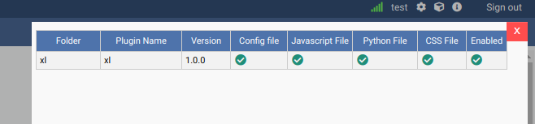
Connecting to the cluster
Let's use OmniDB to connect to the coordinator node. First of all, fill out connection info in the connection grid:
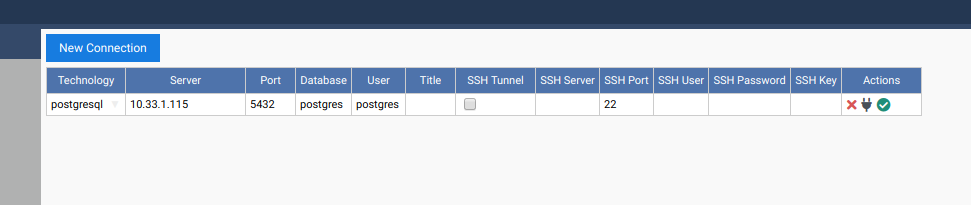
Then select the connection. You will see OmniDB workspace window. Expand the tree root node. Note that OmniDB identifies it is connected to a Postgres-XL cluster and shows a specific node called Postgres-XL just inside the tree root node. Expand this node to see all the nodes we have in our cluster:
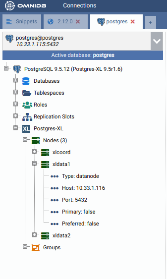
Creating a HASH table
From the root node, expand Schemas, then public, then right click on the Tables node. Click on Create Table. Name your new table, add some columns to it and do not forget to add a primary key too:
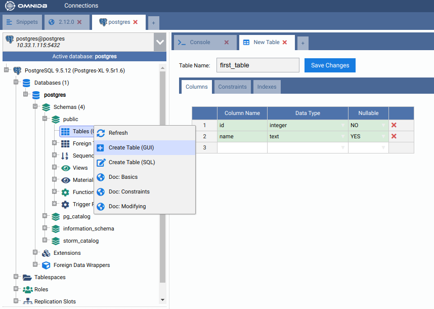
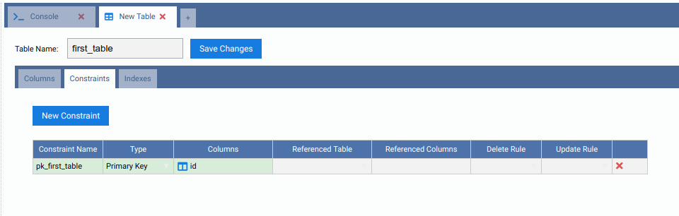
When done, click on the Save Changes button. Now right click on the Tables node and click on Refresh. You will see the new table created. Expand it to see that there is also a Postgres-XL node inside of it. Check its properties.
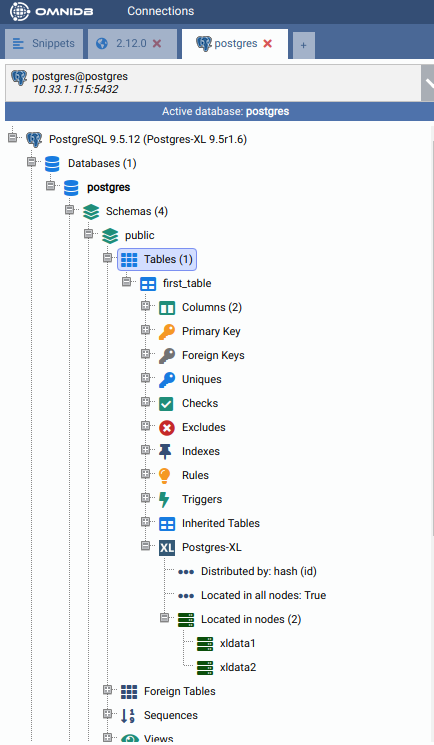
By default, Postgres-XL always try to create a table distributed by HASH. It means that the data will be split into the nodes regularly, through a hash function applied on the specified column. If present, it will use the primary key, or a unique constraint otherwise. If there is no primary key nor unique constraint, Postgres-XL uses the first eligible column. If not possible to distribute by HASH, then Postgres-XL will create the table distributed by ROUNDROBIN, which means that the data will be split in a way that every new row will be added to a different data node.
Now let's add some rows in our new table. Right click on the table, then go to Data Actions and then click on Edit Data. Add some rows and then click on the Save Changes button:
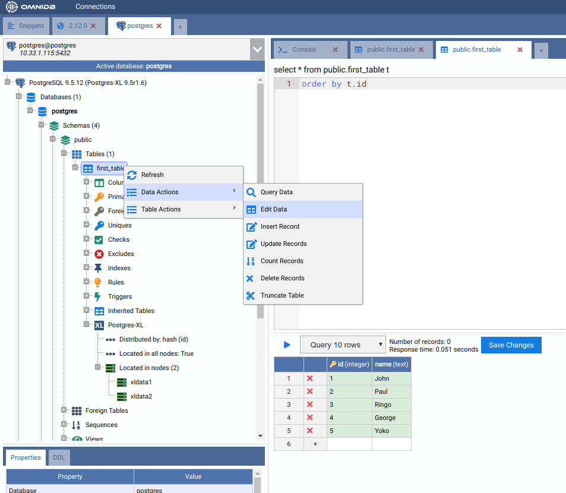
Right click on the table again, Data Actions, Query Data. You will see that cluster-wide the table has all data inside.
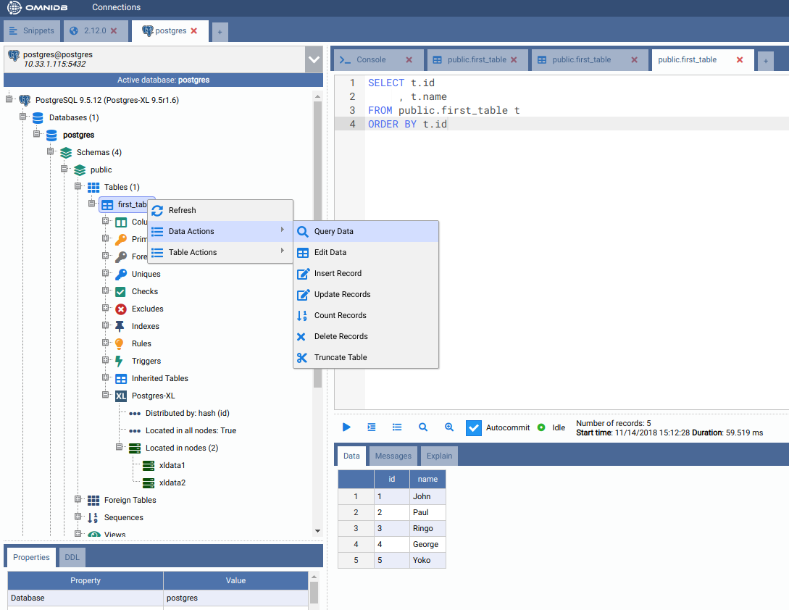
But how the data was distributed in the data nodes? In the Postgres-XL main node, right click on each node and click on Execute Direct. Adjust the query that will be executed directly into the data node, as you can see below.
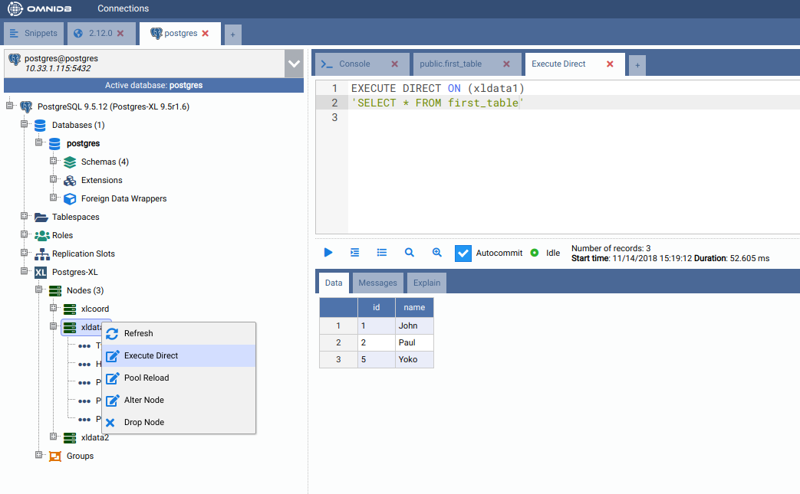
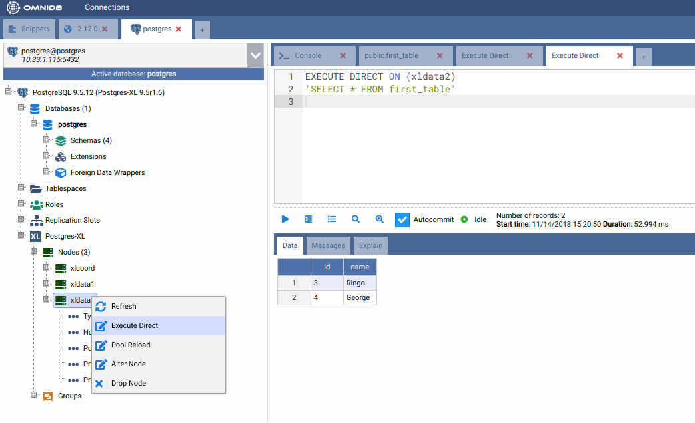
Creating a REPLICATION table
While HASH distribution is great for write-only and write-mainly tables, REPLICATION distribution is great for read-only and read-mainly tables. However, a table distributed by REPLICATION will store all data in all nodes it is located.
In order to create a REPLICATION table, let us create a new table like we did before:
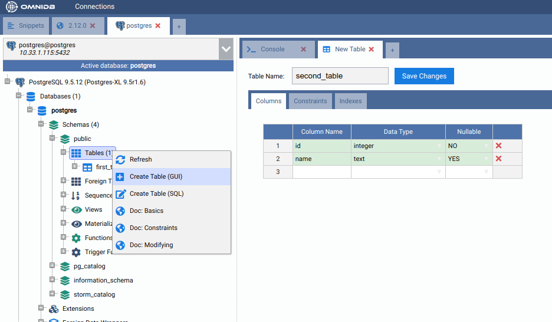
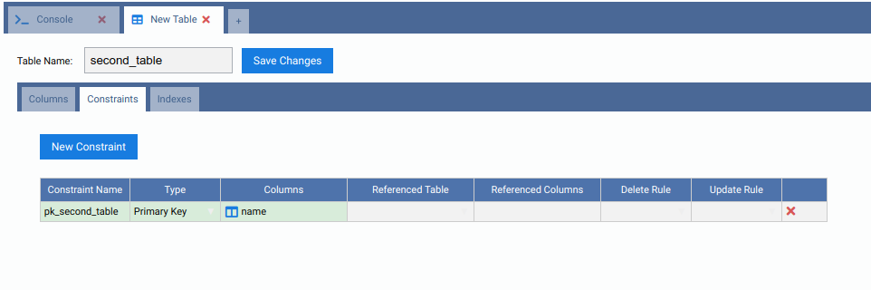
Note how by default it was created as a HASH table:
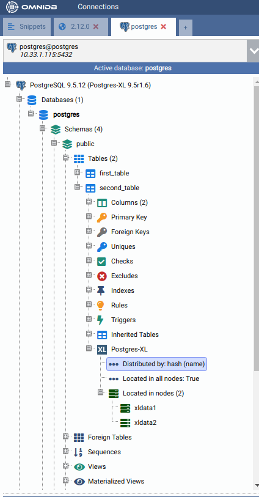
Let us change the distribution type of the table by right-clicking on the Postgres-XL node inside the table, and then clicking on Alter Distribution. Uncomment the "REPLICATION" line and execute the command:
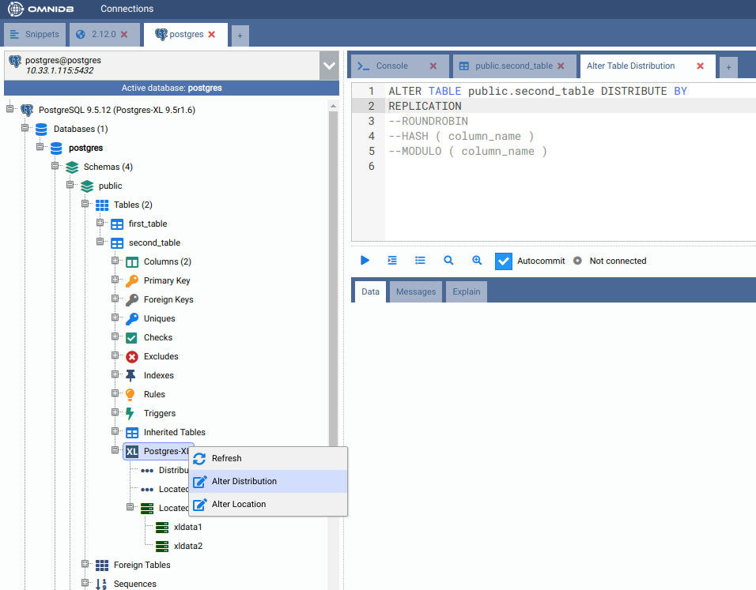
You can check the distribution was successfully changed by right-clicking on the Postgres-XL node and clicking on Refresh. The properties will now show Distributed by: replication.
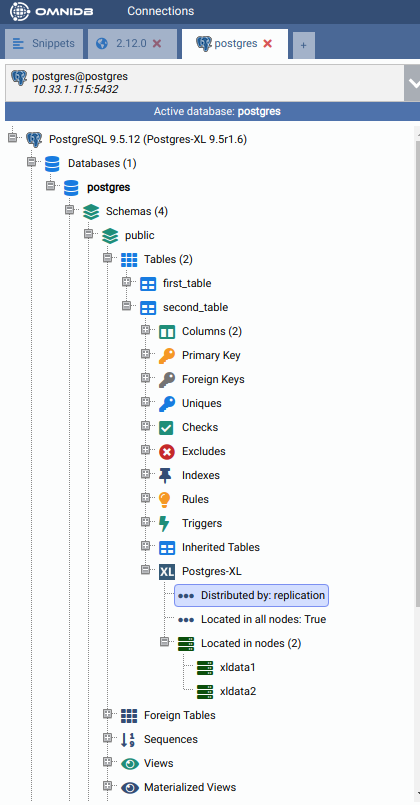
Now add some data to the table:
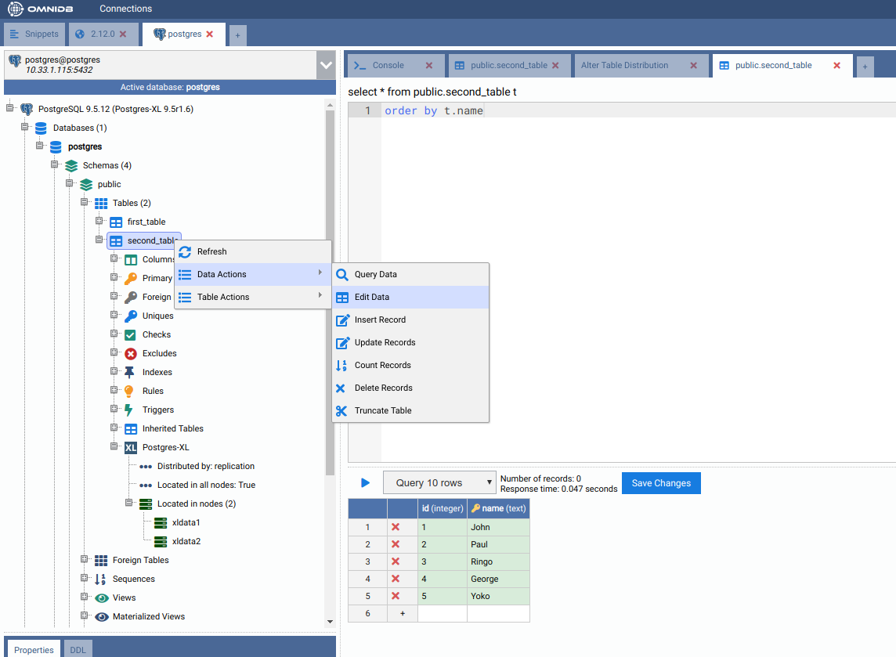
And then check that all data exist on all data nodes:
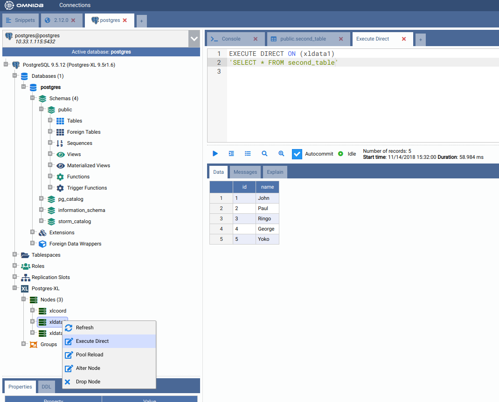
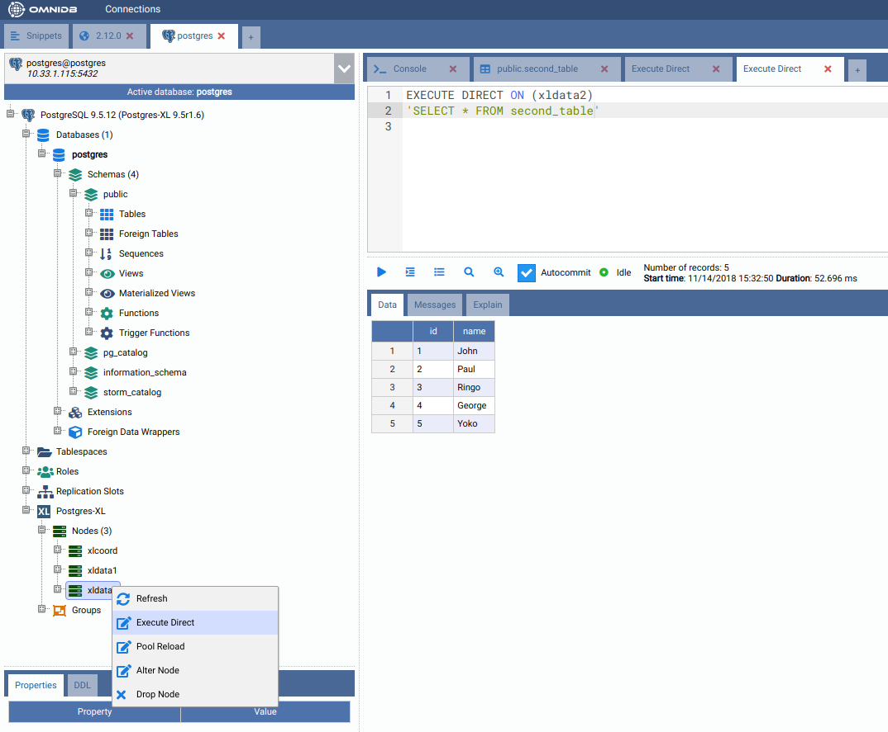